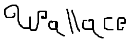

Hoja de Vida
Información Personal
Nombre completo: Oscar Razhith Espitia Cardenas
Edad: 20 años
Correo Electrónico: walasrazoth@gmail.com
Teléfono: +57 311 4888594
GitHub: MrWallace34
Firma:
Experiencia Laboral
-
Practicante de TI
Empresa: Digiware de Colombia S.A
Fecha: Septiembre de 2020 - Marzo de 2021
Descripción: Soporte en el area de TI
Educación
-
Tecnico en programacion de software
Institución: Servicio nacional de aprendizaje (SENA)
Fecha: Enero de 2020 - Agosto de 2020
Descripción: Estudio de programación
-
Ingenieria en sistemas
Institución: Fundacion universitaria Konrad Lorenz
Fecha: Septiembre 2021 - actualidad
Descripción: Estudio de programación, bases de datos, redes y sistemas operativos.
Habilidades
- HTML
- CSS
- Python
- PHP
- MySQL

Esta obra está bajo una Licencia Creative Commons Atribución-NoComercial-CompartirIgual 4.0 Internacional.